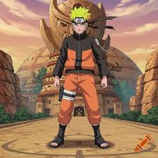

Naruto Uzumaki's Journey

The Story of a Hidden Leaf Ninja
Naruto Uzumaki is a young ninja who seeks recognition from his peers and dreams of becoming the Hokage, the leader of his village. The story is told in two parts, the first set in Naruto's pre-teen years, and the second in his teenage years. As a baby, a powerful fox known as the Nine-Tails was sealed inside him, causing the villagers to shun him as he grew up. Despite this difficult childhood, he maintains a cheerful and determined personality that wins people over. He joins Team 7 alongside his rival Sasuke Uchiha and his teammate Sakura Haruno, under the guidance of Kakashi Hatake. Together, they go on various missions and learn what it truly means to be a ninja working as a team. Throughout his journey, Naruto faces many dangerous enemies but always relies on his core belief of never giving up.
Why the Series is a Classic
The series has become a massive global phenomenon since it was first created by Masashi Kishimoto. It teaches important life lessons about friendship, hard work, and overcoming the darkest parts of oneself. The intricate power system using chakra and hand signs allows for highly creative and strategic battles. Beyond the main cast, the story features a huge roster of memorable side characters, each with their own unique abilities and tragic backstories. The soundtrack is also incredibly iconic, perfectly capturing the emotion of both sad moments and epic fights. Many fans grew up watching this show, making it a nostalgic cornerstone of modern anime culture. It truly set a high standard for action series that followed it.
Key Characters
- Naruto Uzumaki
- Sasuke Uchiha
- Sakura Haruno
- Kakashi Hatake

You can read the manga on Viz Media or watch the show on Crunchyroll.